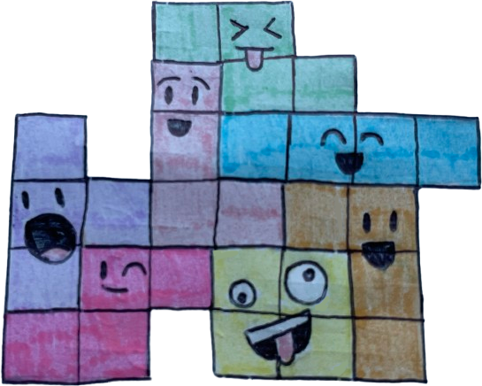

Tetris
October 16, 2025
Community has been the glue that holds my sanity together.
The opposite coast holds what I used to call home, now 3,000 miles away. Throughout my 18 years of revolving around the sun, I established communities wherever I could: home, school, extracurriculars, online. As welcoming as the MIT community is, it still feels a little strange to be uprooted. I’m used to being known, not in the sense of being famous, but rather understood.
Throughout my classes, clubs, and living groups, I’ve met a lot of people. I have trouble remembering everyone’s names; rather, I’m much better at recognizing someone by face. The trouble with this, though, is I know I’ll have seen somewhere before, but I can’t recall their name nor where I met them. It’s especially awkward when I want to talk to them, but can’t initiate a conversation because I don’t have their name in my head. It’s even worse when they remember my name, and I awkwardly stand there trying to remember where I’ve seen them before.
Even when I do remember both, I still have trouble taking the first step to hang out with people. I hesitate to text someone directly and ask what they’re up to because I worry it might come off as annoying, so I usually don’t. Instead, I rely on chance; I show up to random events or my usual study spots and hope to run into someone I know. That actually works more often than I’d expect, but it still makes it hard to stay in touch with the people I really want to see.
What I’ve come to realize, though, is that people generally aren’t annoyed when you reach out. In fact, I really appreciate it when someone texts me first, but for some reason, I don’t extend that same logic to others. It takes conscious effort to remind myself that maintaining a connection means reaching out, not just waiting for it to happen. Maybe that’s because I’m not just trying to talk to people; rather, I’m trying to really understand them. Everyone here is doing something interesting, and while I do enjoy those conversations, I think part of me is impatient to actually understand someone’s values rather than what they do. If someone is completely stripped of their activities, beliefs are what make someone unique. To me, understanding those values feels most fulfilling and intellectually stimulating.
Obviously, being that vulnerable with someone within a few weeks is very rare, which is why I’m tethered to the communities back in my hometown, where I don’t have to explain myself. I’ve had trouble keeping in touch with people back home because of the time difference, but I’m also having trouble relating to the people here since we’ve only been together for a short period. It takes time, but I always feel like I could be doing more to find a strong community here, to find my new home.
Maybe home is a bunch of communities stitched together into one. I like to think of it as Tetris blocks: each block (Z, T, J, O, L, S, and I) represents a different community. Right now, they’re still falling, looking for a place below. I feel like I’m jumping between them, trying to see how they fit together.
And so I introduce the Z Tetris block, which represents my dorm floor, 5W (pronounced “fifth west”). When I was deciding my living community for the next four years, I remember the upperclassmen were remarkably chill when chatting with freshmen. I didn’t know if I was going to stay on this floor at the time because my dorm, East Campus, has an event called Hall Rush where we explore all of the floors to glean their culture and rank our top choices. I ended up opting out of the entire process to stay in 5W. One of the major reasons I chose to stay was that I really enjoyed hanging out with the upperclassmen on the floor. They made an effort to get to know us freshmen and included us in their traditions, like kekechez (where the floor enjoys cookies and cheese together) and hallfeed (where we enjoy some freed food as the hall chairs make their announcements). I also loved the mix of chill and chaotic vibes of the floor. It’s much more laid-back than the other floors, so it’s nice to live on. Also, there are cats, which is enough of a selling point.
In general, I appreciate East Campus as a whole. I think it filters a very specific subset of the MIT community, which ended up being a good fit for me. Even though the culture of each floor is different, you can freely traverse the other floors and hang out — people are pretty inviting. There are lots of mixers between floors, which I don’t hear much about in other dorms. The one inconvenience, however, is being separated from all the other dorms, so I do sometimes feel isolated from the general MIT community. Luckily, the other Tetris pieces alleviate this feeling of isolation.
In particular, I’m part of the MIT-Wellesley Toons, represented by the T Tetris block. The Toons are an acapella group and one of the first communities I joined. I knew I wanted to try out acapella in college after being blown away when I watched the Logarhythms perform at Campus Preview Weekend. At the time, I didn’t realize there were so many more acapella groups, so during the hectic weekend of auditions, I speedran as many of them as I could. I honestly didn’t expect to get into any, because the extent of my experience was singing in my elementary school’s choir and playing piano. I just did it for the lore.
There is so much to learn from everyone, and I’m excited to be able to sing with such a well-established group. Unlike the other acapella groups, The Toons have members from colleges other than MIT, namely Wellesley College and Olin College of Engineering. Wellesley and Olin are pretty close to each other, so half our rehearsals are at MIT, while the other half are at Wellesley. To get to Wellesley from MIT, it’s about a 45 minute bus ride using the Local Motion bus, which we affectionately call the Loco. While we get quite annoyed about how the Loco is always at least 20 minutes late during rush hour, the trip is worth it — we get to eat at the Wellesley dining hall. The food at MIT pales in comparison to Wellesley. To be clear, I do not think MIT dining is bad, but it could be better. Apparently, the students at Wellesley think their dining hall food sucks, but I think most of them haven’t eaten at MIT before.
Anyhow, I enjoy the mix of people from different colleges because there is more variability in how people think about college and future careers. Additionally, the last hour of rehearsals is reserved for “check-ins” — we go in a circle and everyone shares what’s been going on in their lives since the last rehearsal. At first, I thought this would be one of those quick, pointless icebreaker-esque meetings, but everyone is actually very open about sharing. Because most members have known each other for several years, they set the stage for a close-knit check-in session, which makes everyone else more willing to talk about their recent happenings. Of course, no one is forced to share if they don’t want to, but I appreciate having a safe space where I can be more vulnerable.
Another space is here, through writing. I represent The Tech with the J Tetris block — unfortunately, there is only one T block, but surely, J is close enough. They have a general meeting with everyone, except my acapella rehearsal at Wellesley overlaps with it. However, there’s a meeting specifically for people writing for Campus Life; usually, there’s a group of 3-5 people. I love how laid-back it is and how we can talk about anything. At the same time, the people are very vibrant, which is very refreshing after a long day.
Inevitably, one must pset. That’s where the O Tetris block comes in, representing my academic groups. In each of my classes, there is somewhat of a community, and I notice it the most for 6.1210 (Introduction to Algorithms). I have not met a single person who finds it a breeze; it’s not shocking that people bond together in times of struggle. Most people seem to work better with others, and it’s highly encouraged to form groups with others for the collaborative aspect. However, I have trouble focusing in groups because I end up wanting to talk to people. Often, I wonder if I should keep trying to force myself to work better in a group, or if I should just accept that I work differently. I’m realizing that I compare myself to other people a lot; I’m more productive when I focus on what works for me. I tend to be quite impatient in figuring out my best workflow, but I’m working on being kinder to myself. Even though I’m still figuring things out, I’ve enjoyed meeting all these people in my classes.
I’ve also learned that calling is a pretty common mode of communication, which I wasn’t used to. I’ve missed a bunch of calls from people in 6.1210, because I simply wasn’t good at picking up. I am more used to scheduled calls, as I’ll actually be expecting a call. I’m still terrible at responding to calls, because I usually have Do Not Disturb on, but I am growing to enjoy the spontaneity of these 6.1210 calls.
One group that’s been my foundation are the people I met at Campus Preview Weekend. I represent them with the L Tetris block since they don’t take Ls. I don’t always see them because they frequent Simmons, which is quite far from East Campus, but catching up with them is nice. We’ve had a fair number of movie nights, where I had the opportunity to become slightly more cultured. For reference, I’ve watched so few movies that I could probably list them with the fingers on my hands. I’ve watched Avatar and a part of Arcane with them. I also got to play Silksong, and it’s the inspiration for a mural I’m working on with someone else on our floor.
I surprisingly haven’t felt homesick a lot. Sometimes, though, my identity feels suspended. Perhaps this is where the pieces falling in Tetris come into play; I feel like I’m falling, but I don’t know where I’ll land. I’ll be representing the self with the S Tetris block. Not only am I changing as I’m here, but I can’t clearly remember the last time I’ve had to explain myself to someone from the very beginning. I taught a lot in high school, so if I cannot explain a topic to someone else, I equate that to not knowing the material at all. Not having a full grasp of who I am scares me; how do I know how I’m going to react under certain situations? I have a pretty decent idea of who I want to be, but sometimes, I’m not sure if I should strive for that image or if I should move the goalposts when necessary.
Because college is such a new environment, I’ve had to think about how I want to assert myself in it. I quickly found I’m someone who thrives with a lot of close connections, but those take a long time to form.
A support system I’ve been looking into is therapy. The tuition for MIT covers a lot of health-related resources, so I decided to investigate them. My sessions are through Mantra Health, and I’m currently seeing my therapist twice a week over the phone. I’ve actually been considering a therapist since high school and am glad to finally try it out!
And when the world feels like it’s going to become an absolute wasteland and nothing feels like it’s working out, I turn to my friends and family back in Nevada, where I am from. It’s incredibly satisfying to hit a Tetris in the game with an I Tetris block, which is what I’ll be representing this group with. For me, home isn’t a physical residence, because those change throughout life; rather, it’s the people I built connections with. I’m lucky to have amazing parents and friends who I’ve known since elementary school. They’ve saved me more times than I can count. Even if I’m not the best at calling them, we catch up in no time when we do.
Each Tetris block represents a fragment of who I am and who I’m becoming. They don’t always fit neatly, and sometimes I need to rotate them again and again before they settle. But the gaps remind me that growth isn’t about perfection, but about trying again and again. With time, patience, and the people around me, I can see it happening: everything starts falling into place.
I wrote this article originally for The Tech, a student newspaper group at MIT! You may read this post here.
✩₊˚.⋆☾⋆⁺₊✧
That is all, consider subscribing or